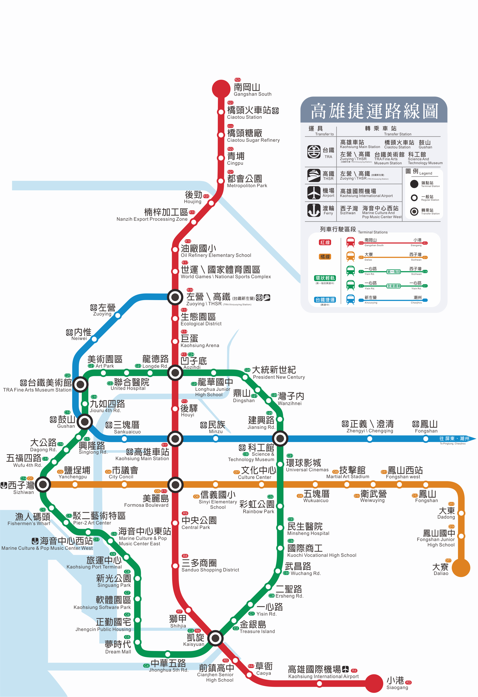
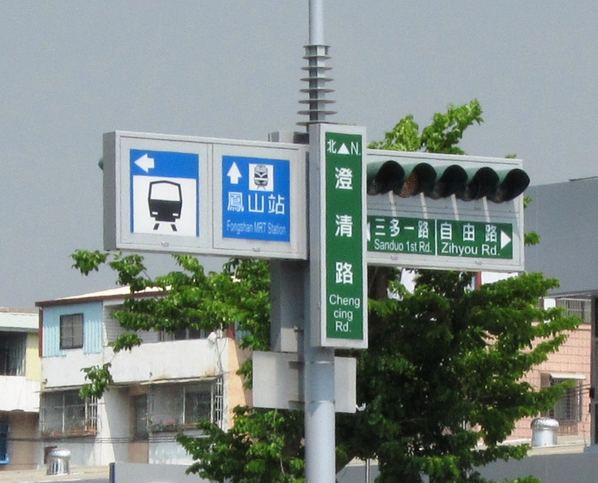
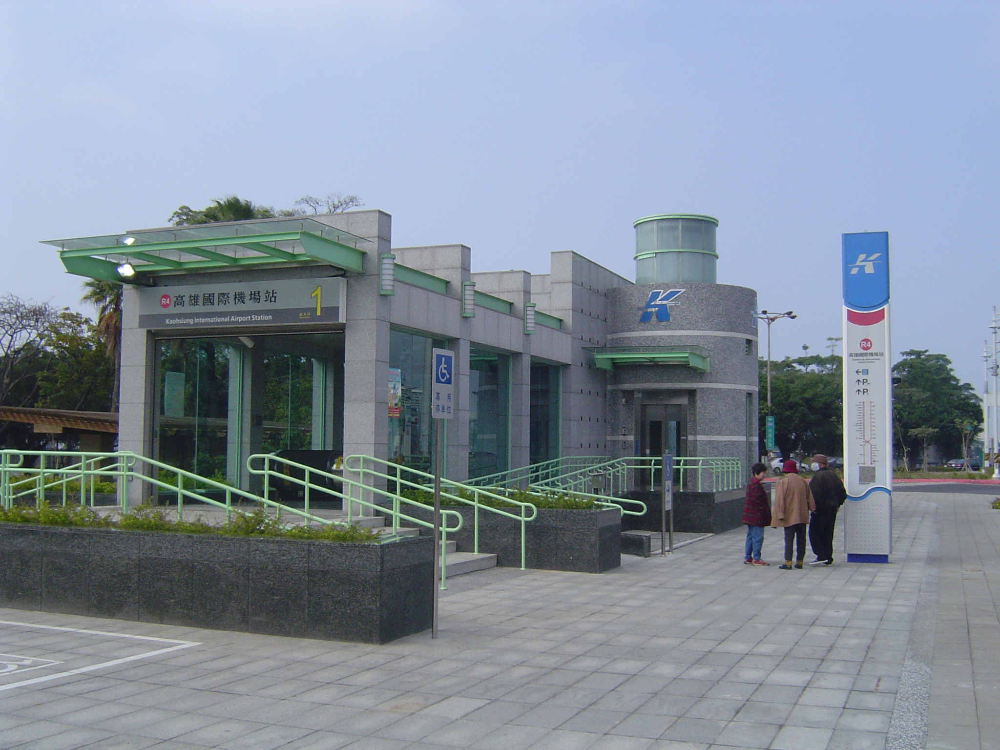
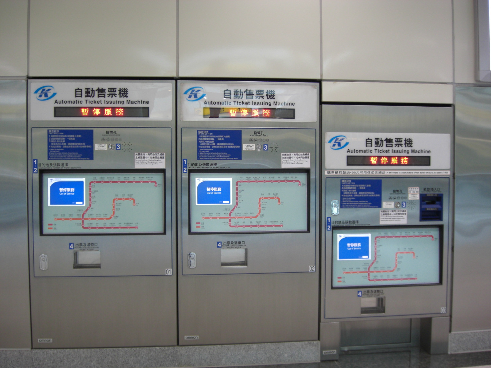
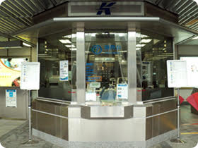
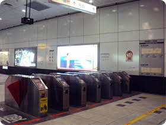
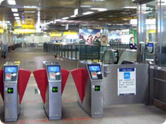
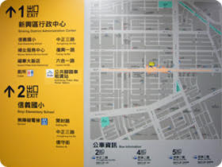
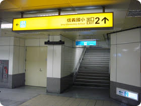

Home
English
中文
Tainan
Attractions
Delicacies
Festivals
Transportation
External Links/Sources
Tainan Attractions Blog
Tainan City Guide Website
Chimei Musuem Website
Taijiang National Park Website
Kaohsiung
Attractions
Delicacies
Festivals
Transportation
External Links/Sources
NSTM Website
Kaohsiung Rapid Transit Website
Pier Art Center Website
Kaohsiung City
Southern Taiwan
Transportation
Kaohsiung has a convenient network of land, air, and sea transportation.
KRTC:
How to find KRTC and ride it:
1. Following the MRT sign to the station
2. Entering MRT Station
3. Buying tickets
Single-Journey Tickets could be bought at Automatic Ticket Issuing Machines (ATIMs).
Specific Tickets could be bought at the information counter.
4.Leaving the MRT Station
-Automatic Gate
-Designated Aisle
5. Leaving the MRT Station
Map and buses information
Entrance Signs
Map








